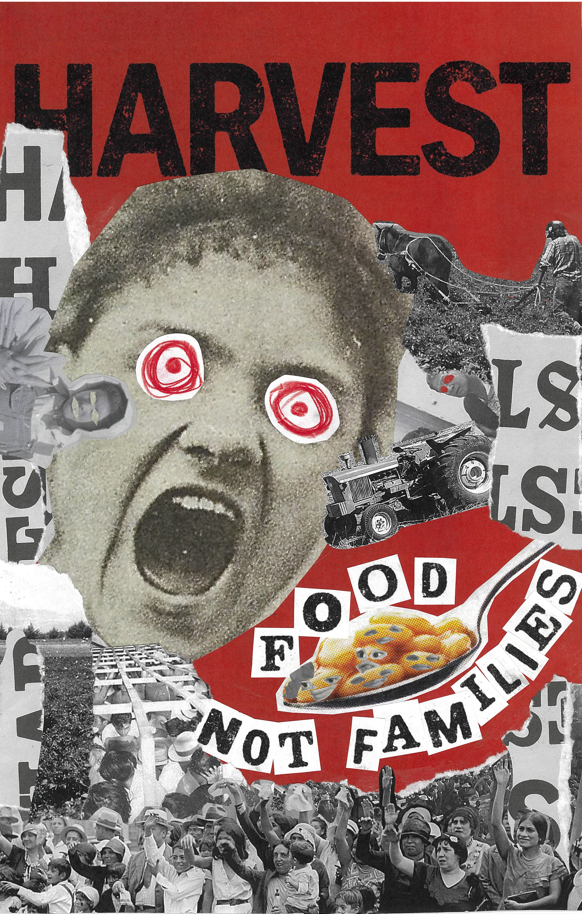

<!DOCTYPE html>
<html lang="en">
<head>
    <meta charset="UTF-8">
    <meta name="viewport" content="width=device-width, initial-scale=1.0">

    <!-- SEO and Social Sharing Tags -->
    <title>Dada Movement Study | Leah Cortez</tit    </main>meta name="description" content="A historical poster study exploring the revolutionary and anti-art Dada movement and its impact on graphic design.">
    <meta name="keywords" content="dada, avant-garde, anti-art, typography, collage, surrealism">
    <meta name="author" content="Leah Cortez">

    <!-- Open Graph and Twitter Card Tags -->
    <meta property="og:title" content="Dada Movement Study | Leah Cortez Studio">
    <meta property="og:description" content="Exploring the revolutionary anti-art principles of the Dada movement.">
    <meta property="og:image" content="images/annotated-2301_Cort_FinalDADA.jpg">
    <meta property="og:url" content="https://leahcortezstudio.art/collections/Historical Posters/dada/">
    <meta property="og:type" content="article">
    <meta name="twitter:card" content="summary_large_image">
    <meta name="twitter:title" content="Dada Movement Study | Leah Cortez Studio">
    <meta name="twitter:description" content="Exploring the revolutionary anti-art principles of the Dada movement.">
    <meta name="twitter:image" content="images/annotated-2301_Cort_FinalDADA.jpg">

    <!-- Favicon Links -->
    <link rel="icon" href="../../../icons/favicon.ico?v=2025" type="image/x-icon">
    <link rel="shortcut icon" href="../../../icons/favicon.ico?v=2025" type="image/x-icon">

    <!-- Google Fonts -->
    <link href="https://fonts.googleapis.com/css2?family=Pirata+One&display=swap" rel="stylesheet">

    <!-- Stylesheet Links -->
    <link rel="stylesheet" href="../../../css/styles.css">
    <link rel="stylesheet" href="../../../css/case-study-simple.css">
</head>
<body>
    <nav>
        <div class="nav-container">
            <a href="../../../index.html" class="logo">
                
            </a>
            <div class="nav-menu">
                <ul class="nav-links">
                    <li><a href="../../../index.html">Home</a></li>
                    <li><a href="../../../bio/index.html">Bio</a></li>
                    <li><a href="../../../collections/index.html">Portfolio</a></li>
                    <li><a href="../../../cv/index.html">CV</a></li>
                    <li><a href="../../../contact/index.html">Contact</a></li>
                </ul>
            </div>
            <div class="hamburger">
                
            </div>
        </div>
    </nav>

    <main class="case-study-page">
        <!-- Hero Section -->
        <section class="case-study-hero">
            <div class="hero-content">
                <div class="hero-text">
                    <h1>Dada Movement</h1>
                    <p class="hero-subtitle">Immigration Protest</p>
                    <div class="project-meta">
                        <span class="meta-tag">Social Justice</span>
                        <span class="meta-tag">Protest Art</span>
                        <span class="meta-tag">Photomontage</span>
                        <span class="meta-tag">Political Commentary</span>
                    </div>
                </div>
                <div class="hero-image">
                    
                </div>
            </div>
        </section>

        <!-- Project Overview -->
        <section class="case-study-section">
                <div class="section-header">
                    <h2>Overview</h2>
                    <p class="section-subtitle">Historical Study of Dada Design Movement</p>
                </div>
                <div class="overview-grid">
                    <div class="overview-details">
                        <div class="detail-item">
                            <h4>Challenge</h4>
                            <p>Create a protest poster that applies Dada's anti-art principles and photomontage techniques to address contemporary immigration issues, demonstrating the movement's enduring power for social commentary.</p>
                        </div>
                        <div class="detail-item">
                            <h4>Course</h4>
                            <p>GRDS 2301 Historical Design Movements</p>
                        </div>
                        <div class="detail-item">
                            <h4>Timeline</h4>
                            <p>Academic Project - Historical Design Movements</p>
                        </div>
                        <div class="detail-item">
                            <h4>Skills</h4>
                            <p>Photomontage, typography, political commentary, protest design</p>
                        </div>
                    </div>
                    <div class="overview-impact">
                        <h4>Historical Impact</h4>
                        <p>Born from the chaos of WWI, Dada weaponized chaos and irrationality against the established order, pioneering photomontage and typographic disruption as tools for political protest. The movement established art as a medium for radical social change, influencing generations of protest design.</p>
                    </div>
                </div>
        </section>

        <!-- Design Process -->
        <section class="case-study-section process">
                <div class="section-header">
                    <h2>Design Process</h2>
                    <p class="section-subtitle">From Historical Protest to Contemporary Action</p>
                </div>
                
                <div class="process-content">
                    <div class="process-steps">
                        <div class="process-step">
                            <div class="step-number">01</div>
                            <div class="step-content">
                                <h3>Movement Research</h3>
                                <p>Analyzed Dada's historical use of chaos, photomontage, and typographic disruption as tools for political protest and social criticism.</p>
                            </div>
                        </div>

                        <div class="process-step">
                            <div class="step-number">02</div>
                            <div class="step-content">
                                <h3>Content Development</h3>
                                <p>Selected powerful imagery and text elements to address contemporary immigration issues, focusing on the separation of families and exploitation of labor.</p>
                            </div>
                        </div>

                        <div class="process-step">
                            <div class="step-number">03</div>
                            <div class="step-content">
                                <h3>Visual Assembly</h3>
                                <p>Created a chaotic yet purposeful composition using photomontage, mixed typography, and deliberate visual disruption to amplify the protest message.</p>
                            </div>
                        </div>
                    </div>
                </div>
        </section>

        <!-- Design Execution -->
        <section class="case-study-section process">
                <div class="section-header">
                    <h2>Design Execution</h2>
                    <p class="section-subtitle">Anti-Design as Political Voice</p>
                </div>
                <div class="process-steps">
                    <div class="process-step">
                        <div class="step-number">01</div>
                        <div class="step-content">
                            <h3>Visual Elements</h3>
                            <ul>
                                <li><strong>Typography:</strong> Chaotic arrangements and mixed fonts</li>
                                <li><strong>Photomontage:</strong> Experimental image combinations</li>
                                <li><strong>Color:</strong> Red backdrop for urgency and attention</li>
                                <li><strong>Symbolism:</strong> Target eyes and screaming mouth</li>
                            </ul>
                        </div>
                    </div>
                    <div class="process-step">
                        <div class="step-number">02</div>
                        <div class="step-content">
                            <h3>Protest Elements</h3>
                            <ul>
                                <li><strong>Direct Message:</strong> "FOOD NOT FAMILIES" slogan</li>
                                <li><strong>Emotional Impact:</strong> Visceral imagery and composition</li>
                                <li><strong>Visual Chaos:</strong> Deliberate disruption of order</li>
                                <li><strong>Layered Meaning:</strong> Multiple levels of interpretation</li>
                            </ul>
                        </div>
                    </div>
                </div>
        </section>

        <!-- Final Outcome -->
        <section class="case-study-section solution">
                <div class="section-header">
                    <h2>Final Outcome</h2>
                    <p class="section-subtitle">Historical Movement Reimagined</p>
                </div>
                <div class="solution-content">
                    <div class="solution-image">
                        
                    </div>
                    <div class="solution-details">
                        <h3>Design Resolution</h3>
                        <p>A contemporary protest poster that successfully applies Dada's anti-art principles to critique current immigration policies and advocate for social justice.</p>
                        
                        <h4>Key Elements:</h4>
                        <ul>
                            <li><strong>Visual Urgency:</strong> Demands immediate attention</li>
                            <li><strong>Message Clarity:</strong> Clear protest message within chaos</li>
                            <li><strong>Emotional Power:</strong> Evokes empathy and action</li>
                            <li><strong>Movement Connection:</strong> True to Dada's protest spirit</li>
                        </ul>

                        <p>The design successfully carries forward Dada's tradition of using artistic chaos to confront societal issues, proving the movement's enduring relevance for contemporary activism.</p>
                    </div>
                </div>
        </section>

        <!-- Results & Reflection -->
        <section class="case-study-section results">
                <div class="section-header">
                    <h2>Results & Reflection</h2>
                    <p class="section-subtitle">Design as Political Action</p>
                </div>
                <div class="results-content">
                    <div class="results-outcomes">
                        <h3>Project Impact</h3>
                        <p>This project demonstrated how historical protest techniques can be effectively applied to contemporary social issues.</p>
                        
                        <p>The poster succeeds in both honoring Dada's revolutionary spirit and addressing urgent current concerns, proving design's ongoing power as a tool for social change.</p>
                    </div>
                    <div class="results-learning">
                        <h3>What I Gained</h3>
                        <ul>
                            <li><strong>Understanding of protest design</strong> principles and impact</li>
                            <li><strong>Skills in photomontage</strong> and visual disruption</li>
                            <li><strong>Experience with political messaging</strong> through design</li>
                            <li><strong>Appreciation for design's role</strong> in social change</li>
                        </ul>
                        
                        <h4>Design Philosophy:</h4>
                        <p>Design can and should be a powerful tool for social commentary and change. Understanding historical protest movements provides valuable techniques for addressing contemporary issues through visual communication.</p>
                    </div>
                </div>
            </div>
        </section>

        <!-- Navigation -->
        <section class="case-study-navigation">
            <div class="nav-container">
                <a href="../bauhaus/index-case-study.html" class="nav-link prev">&larr; Bauhaus</a>
                <a href="../index.html" class="nav-link center">Back to Historical Posters</a>
                <a href="../grunge/index-case-study.html" class="nav-link next">Grunge &rarr;</a>
            </div>
        </section>
    </main>

    <footer class="main-footer">
        <div class="footer-content">
            
            <p class="copyright">Leah Cortez © 2025</p>
        </div>
    </footer>
    <script src="../../../scripts/main.js" defer></script>
    <script src="../../../scripts/historical-posters-nav.js" defer></script>
</body>
</html>
